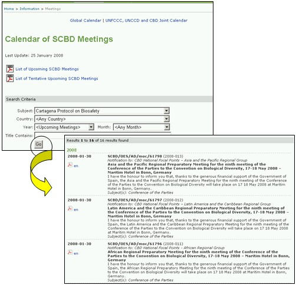

会议和文件链接将用户带入生物多样性公约秘书处会议排期表，提供确认将召开和暂定将召开的生物多样性公约秘书处会议列表（PDF格式）。在这些链接的上面提供了这些会议列表的最近一次更新日期。
会议排期表还提供了搜索功能，可用于查找有关生物多样性公约的具体内容的某一次会议。
若用户在主题框中选择卡塔赫纳生物安全议定书并点击 ，则在搜索键下显示过去已召开、已确定和暂定的会议列表。搜索结果列表提供了有关会议的文件（若有的话）链接。
对议定书有关会议的搜索可通过选择具体的搜索参数进行限定，如会议主题；主办或即将主办会议的国家；年份；月份和会议标题中的词语。

图 38